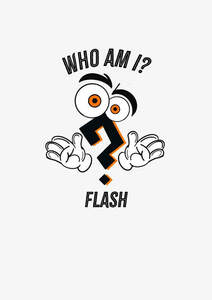

Trade Mark Journal No.2025/041 10 October 2025
UK00004271344 29 September 2025 (9,16,28,41)

- Class 9
- Prerecorded flash memory cards; Computer programmes for interactive television and for interactive games and/or quizzes; Electronic interactive whiteboards; Downloadable videos; Video cards; Printed cards [magnetic]; Flash memory cards; Computer whiteboards; Downloadable postcards; Pocket computers for note-taking; Downloadable posters; Printed cards [encoded]; Memory cards for video game machines; Blank flash memory cards; Downloadable electronic books; Memory cards; Magnetic coded cards; Handheld graphing calculators; Downloadable computer games; Printed bank cards [magnetic]; Plastic cards [encoded]; Printed bank cards [encoded]; Memory cards for cameras; Downloadable podcasts; Electronic machines for reading credit cards; Graphics cards; Downloadable templates for designing audiovisual presentations; Printed cash cards [encoded]; Ringtones [downloadable]; Downloadable ringtones; Printed cash cards [magnetic]; Downloadable electronic games; Encoded cards; Sound cards; Audio books; Encoded magnetic cards; Cards (Encoded magnetic -); Magnetic encoded cards; Cards (Magnetic or encoded -); Magnetic cards [encoded]; Pre-recorded audio tapes featuring games; Downloadable electronic books in the field of golf instruction; Encoded smart cards; Interactive multimedia software for playing games; Electronic dictionaries; Add-on cards; Downloadable video files; Magnetic identifying cards; Downloadable interactive entertainment software for playing video games.
- Class 16
- Workbooks containing exercises; Baby books [storybooks]; Storybooks; Whiteboard erasers; Whiteboards; Trivia cards; Strategy guide books for card games; Printed teaching activity guides; Paper tapes for calculators; Index cards [stationery]; Dictation books; Flash cards; Booklets; Strategy guide books for computer games; Printed cards; Menu cards; Printed informational cards; Baby memory books; Coloring books; Sticker activity books; Paper boxes for storing greeting cards; Flipcharts; Self-adhesive tapes for stationery use; Printed lessons; Spiral-bound notebooks; Blackboard erasers [chalk erasers]; Self-adhesive paper for notes; Textbooks; Cards; Booklets relating to games; Printed booklets; Clips for paper [stationery]; Dictionaries; Notepads; Strategy guide magazines for card games; Printed music books; Wirebound books; Index cards; Pocket books [stationery]; Trading cards other than for games; Trading cards, other than for games; Paper teaching materials; Printed recipe cards; Crossword puzzles; Paper folders [stationery]; Printed informational folders; Highlighters; Sticker books; Paper book markers; Reference cards; Printed teaching materials; Stickers [stationery]; Motivational cards; Chalkboards; Colouring books; Picture cards; Blank paper computer tapes for recording programs; Paper folders; Paper loyalty cards; Removable self-stick notes; Pencils with erasers; Clips for letters; Illustrated notepads.
- Class 28
- Toy blocks for learning braille; Puzzles [toys]; Quiz games; Cards [games]; Japanese playing cards; Puzzles; Jigsaw puzzles; Tarot cards [playing cards]; Keno cards; Puzzle mats [toys]; Karuta playing cards (Japanese card game); Electronic learning toys; Cube puzzles; Japanese playing cards (hanafuda); Playing cards and card games; Trading cards for games; Uta-garuta [Japanese playing cards]; Game cards; Chinese checkers [games]; Chinese checkers games; Chinese checkers as games; Toys in the form of puzzles; Playing cards; Cards (Playing -); Electronic educational teaching games; Electronic games for the teaching of children; Traditional Japanese playing cards; Korean board games (Yut Nori sets); Bingo cards; Cards (Bingo -).
- Class 41
- Arranging of quizzes; Operating quizzes.
WHO AM I FLASH LTD